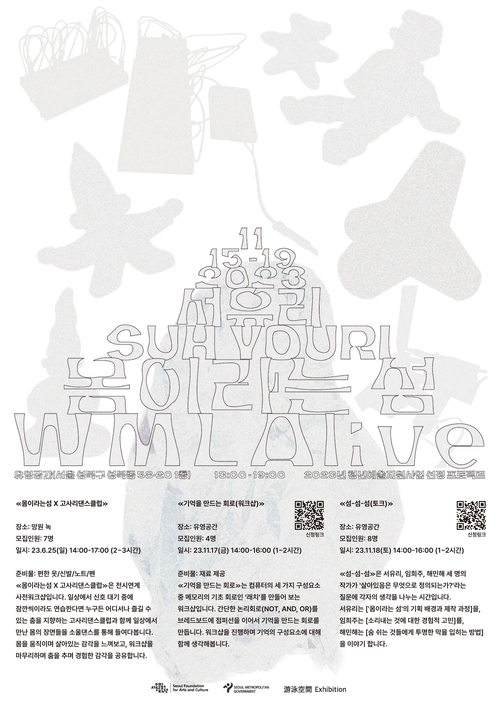
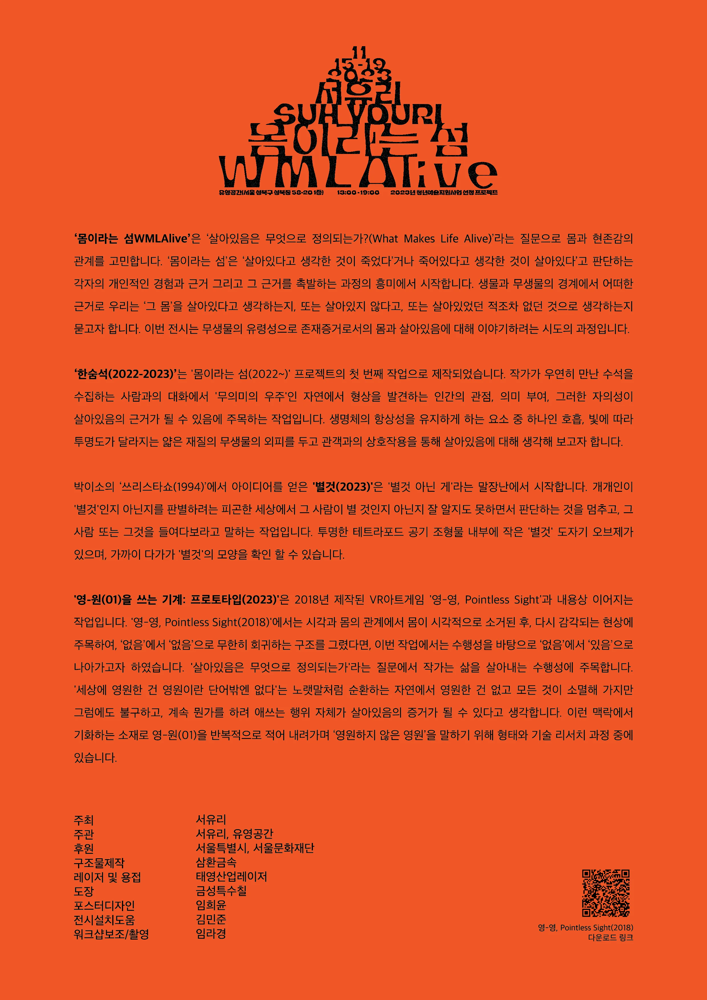
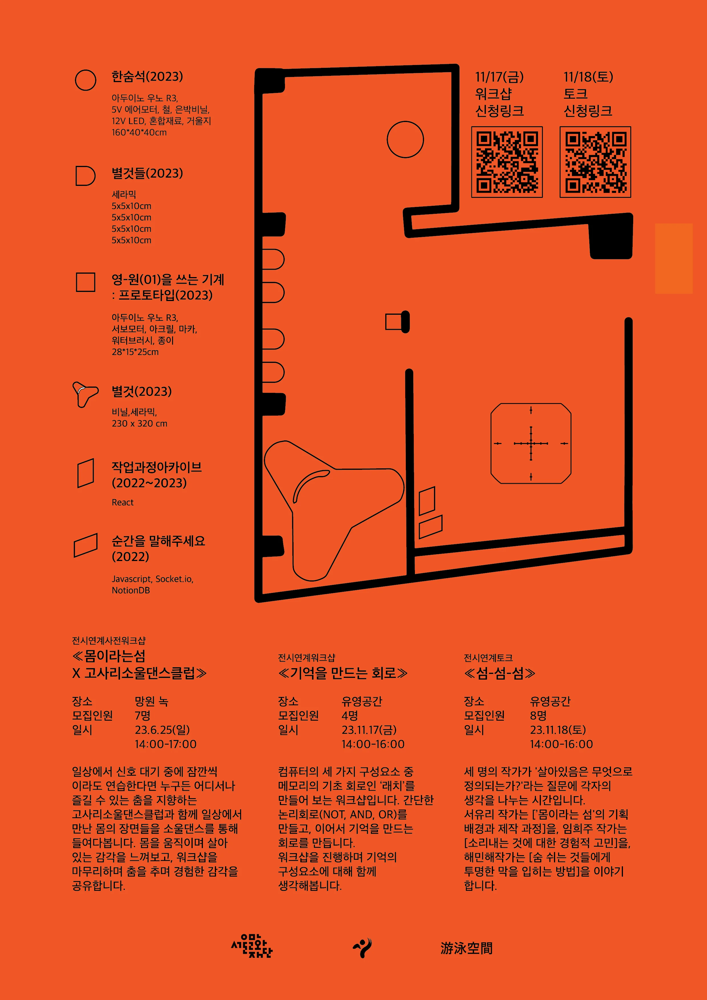

-
한숨석 (2023)
Arduino UNO R3, 거리센서, 5V 에어모터, 솔레노이드 밸브, LED 조명 12v, 은박 시트, 철재, 미러 필름, 전선 연장선 | 160 × 40 × 40(cm) 작가가 우연히 만난 수석을 수집하는 사람과의 대화에서 '무의미의 우주'인 자연에서 형상을 발견하는 인간의 관점, 의미 부여, 그러한 자의성이 살아있음의 근거가 될 수 있음에 주목하는 작업입니다. 생명체의 항상성을 유지하게 하는 요소 중 하나인 호흡, 빛에 따라 투명도가 달라지는 얇은 재질의 무생물의 외피를 두고 관객과의 상호작용을 통해 살아있음에 대해 생각해 보고자 합니다. -
별 것 (2023)
도자기, 비닐, 낚시줄 | 230 × 320 × 320 cm 박이소의 ‘쓰리스타쇼(1994)’에서 아이디어를 얻은 '별것(2023)'은 '별것 아닌 게'라는 말장난에서 시작합니다. 개개인이 '별것'인지 아닌지를 판별하려는 피곤한 세상에서 그 사람이 별 것인지 아닌지 잘 알지도 못하면서 판단하는 것을 멈추고, 그 사람 또는 그것을 들여다보라고 말하는 작업입니다. 투명한 테트라포드 공기 조형물 내부에 작은 '별것' 도자기 오브제가 있으며, 가까이 다가가 '별것'의 모양을 확인 할 수 있습니다. -
영-원(01)를 쓰는 기계 (2023)
Arduino Uno R3, 서보모터, 아크릴, 종이, 워터브러시, 물 | 28 × 15 × 25 cm '영-원(01)을 쓰는 기계(2023)'은 2018년 제작된 VR아트게임 '영-영, Pointless Sight'과 내용상 이어지는 작업입니다. '영-영, Pointless Sight(2018)'에서는 시각과 몸의 관계에서 몸이 시각적으로 소거된 후, 다시 감각되는 현상에 주목하여, ‘없음’에서 ‘없음’으로 무한히 회귀하는 구조를 그렸다면, 이번 작업에서는 수행성을 바탕으로 ‘없음’에서 ‘있음’으로 나아가고자 하였습니다. '살아있음은 무엇으로 정의되는가'라는 질문에서 작가는 삶을 살아내는 수행성에 주목합니다. '세상에 영원한 건 영원이란 단어밖엔 없다'는 노랫말처럼 순환하는 자연에서 영원한 건 없고 모든 것이 소멸해 가지만 그럼에도 불구하고, 계속 뭔가를 하려 애쓰는 행위 자체가 살아있음의 증거가 될 수 있다고 생각합니다. 이런 맥락에서 기화하는 소재로 영-원(01)을 반복적으로 적어 내려가며 ‘영원하지 않은 영원’을 말하는 작업입니다. -
아카이브 웹사이트(2022-2023)
React 작업과정이 기록된 아카이브 사이트. 메모와 내부구조 등 설계과정이 기록되어있습니다. → -
순간을 알려주세요 (2023)
Javascript, Socket.io, NotionDB, Local Deployment "무언가가 살아있다고 느낀 순간은 언제인가요?", "무언가가 죽어있다고 느낀 순간은 언제인가요?"—이 두 질문을 관람객에게 던지고, 그 답변들을 수집하여 공유하는 웹사이트. →
-
전시연계워크샵: 몸이라는 섬 X 고사리소울댄스클럽
2023.6.25 (일) 14:00-17:00 일상에서 신호 대기 중에 잠깐씩이라도 연습한다면 누구든 어디서나 즐길 수 있는 춤을 지향하는 고사리댄스클럽과 함께 일상에서 만난 사물들과 기억에 남은 순간들의 장면들을 테크노 음악과 함께 춤을 추며 들여다봅니다. 걷기, 반복, 정지 등을 통해 ‘무엇을 살아있는 상태일지’ 감각해봅니다. 참여자들은 생명체와 무생물 사이의 경계를 질문하는 신체적 실천에 참여합니다. -
전시연계워크샵: 기억을 만드는 회로
2023.11.17 (금) 14:00-16:00 컴퓨터의 구성요소 중 기억을 담당하는 Memory를 NOT, AND, OR 논리회로를 통해 1bit를 기억하고 / 잊는 회로를 제작합니다. 과정 이후, 기억의 구성요소에 대해 함께 생각해봅니다. -
전시연계토크: 섬-섬-섬
2023.11.18 (토) 14:00-16:00 ≪섬-섬-섬≫은 서유리, 임희주, 해민해 세 명의 작가가 '살아있음은 무엇으로 정의되는가?'라는 질문에 각자의 생각을 나누는 시간입니다. 서유리는 ['몸이라는 섬'의 기획 배경과 제작 과정]을, 임희주는 [소리내는 것에 대한 경험적 고민]를, 해민해는 [숨 쉬는 것들에게 투명한 막을 입히는 방법]을 이야기 합니다.
작가
서유리
전시설치지원
김민준
포스터 디자인
임희윤
기록
유영스페이스
워크샵 어시스턴트
임라경
워크샵 협력
고사리소울댄스클럽 고주혜, 임희주, 해민해
구조물 제작
삼환메탈
레이저 및 용접
태영공업레이저
도장
금성특수도장
특별 감사
도자작업실 완
후원
서울문화재단

전시 포스터 1

전시 포스터 2

전시안내지 1

전시안내지 2